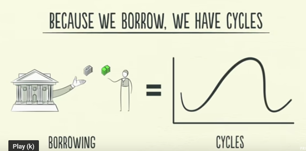
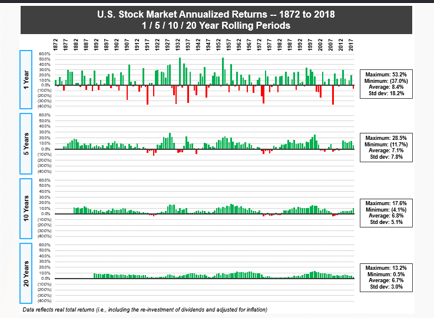
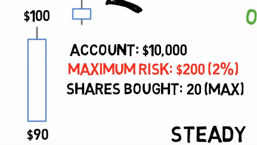
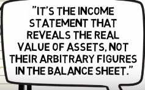
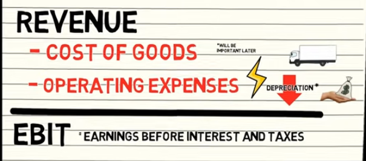
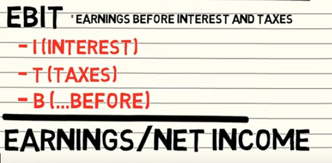
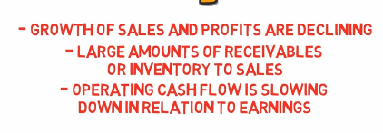

A stock is technically a loan with infinite maturity, so the company won't actually ever pay back the loan. In reality, most companies come to an end eventually, but there are many companies that have lasted for 100 years or more. Furthermore, a stock may not ever pay out any cash dividends at all, so you may not get any interest on the loan either.
Short selling: an investor borrows securities, sells the borrowed securities immediately, and then hopes to buy them back later at a lower price. Investors borrow securities when they believe that their value will fall.
Think of investing similar to horse betting where the amount of money in the pool for betting determines the odds (betting on a weak horse costs less money if you win you win the pool but paid less than people that bet on a strong horse).
Always consider quality and price when buying stocks. Aim for getting more quality per price.
Anti-Fragile
E.g. youtuber winning with negative and positive comments
Fragile - robust - anti-fragile
-
Bailouts
-
Trying to protect your kid from all harms
-
Overly hygienic
Are all turning something robust or anti-fragile into something fragile
Something that is fragile (a car hitting a wall at increasing speeds). Exponential decrease

Something that is anti-fragile. Exponential growth:

Investing in bio-tech

When dealing with random events (or black-swan events) focus on prevention rather than trying to predict
Aim for small uncorrelated errors
Lindy effect = indicator of anti-fragile
That which is old is also that which is expected to survive the longest. Something that managed to survive for a long time has most likely developed anti-fragile features. Insurance for old vs. you and insurance against dropping out of book seller top chart:
All else equal better bet on a company that his been longer around and a font manager with a longer track record.

Focus on pay-off rather than probability

-
Pay-off: .1*2 = .2
-
Pay-off: .9* -.1 = -.09
-
.2 + .09 = .11 = 11%
-
Investing 100\$ = 100 * .2 + 100 * -.09 = 20 - 9 = 11%
Better multiple favorable bets with less pay-off but lower risk
Should you invest 100\$ in a start-up that has 40% probability of succeeding if a succeeding you win 500\$. Or put 25\$ in 4 (independent) start-ups with 40% probability of succeeding?
-
One company expected value = 500\$ * .4 - 100\$ * .6 = 140\$
-
Multiple companies
-
4* 500\$ * .4 - 4 * 25\$ * .6 = 750\$
-
60% p(failure)
-
60% failure happening 4 times in a row = (.6)^4^ = 12.96%
-
Chance of 40% event happening at least once = 100%-12.96% = 87.04%
-
The probability that 10 mutually independent start-ups all succeed is 0.01 % (0.4^10^) but the probability that at least one succeeds is 99.4% (1 - 0.6^10^).
Economy
https://www.youtube.com/watch?v=PHe0bXAIuk0&list=RDLV2kJxqIO5sxQ&index=3
-
The economy is mainly driven by three factors
-
Productivity growth
-
Short term debt cycle (5-8 years cycle)
-
Up-cycle
-
More debt/credit creates more spending
-
Economic expansion
-
Prices rise
-
Inflation
-
Inflation is countered by higher interest rates (decrease borrowing > debt)
-
Down-cycle
-
Higher interest rates cause less credits
-
Less spending
-
Economy shrinks
-
Prices go down
-
Deflation -> recession
-
Deflation is countered by lower interest rates to fuel the economy > with more credit
-
Long term debt cycle (75-100 years cycles)
-
People tend to borrow more than the repay
-
As longs as the income and asset values grow faster than the debts > that works
-
At one point the level of debt grows bigger than the income and > asset values
-
People have to spend more on repaying their loans than they can > afford
-
That causes people to spend less
-
Causing a depression and stock market crashes
-
Credit is an asset to the lender (bank) and a liability to the borrower.
-
Debt drives the economic cycles more than productivity growth (it usually follows a quite constant growth while debts swing up and down)

-
Borrowing is a way of spending more money in the present rather than in the future (the settlement of the transaction based on debt is deferred)
-
In order to buy something that you can\'t afford you need to spend more than you currently make
-
You borrow from your future self
-
To pay the debt back at one point you need to spend less than you make.
- More debt allows people to purchase more than we produce and less debt prevents people from buying as much as we produce

Dividend discount model
-
The cash flows that investors receive from stock are the dividends, so fundamentals-based models of stock price note that the current price of a share of stock is equal to the present discounted value of the sum of all its future dividends. Technically, this represents an infinite number of future dividends.
-
There's a surprisingly simple formula for the present value of the sum of all future dividends: D/(r − g). This formula is called the dividend discount model.
-
the amount of the next annual dividend: D = \$1.72 per share
-
the expected return on the stock (based on CAPM): r
-
To use the CAPM to estimate the expected return, or discount rate, on a stock, we use the following formula:
-


-
E(r~i~) = expected return
-
r~f~ = risk-free-rate = return on a 10-year treasury bond (about 5%)
-
ß~i~ = beta
-
The final term is the difference between the expected return on the entire market and the risk-free rate---called the market risk premium, or the compensation for bearing one unit of risk.
-
-
-
average growth rate of the dividend: g (average dividend growth rate over the past 5 years.)
Dividends
Companies usually don't reduce the relative amount of dividends (dividend yield) the pay but rather try to keep them stable or even increase. Reducing or increasing dividends is an indicator of strength or weakness.
Several academic studies show that the higher the fraction of earnings a company pays out as dividends, the higher the growth rate of earnings tends to be over the next 10 years.
A stock buyback, or share repurchase, is a transaction in which a company goes into the stock market and repurchases, or buys back, some of its outstanding shares. This is a substitute for a dividend because the company has to pay cash for these repurchased shares, which returns cash to the company's shareholders.
Advantage of long term investment over short term
https://www.visualcapitalist.com/stock-market-returns-time-periods-1872-2018/
https://themeasureofaplan.com/us-stock-market-returns-1870s-to-present/
Interest rates and stocks prices have a reverse relationship (compare P/E ratio overall in relation to interest rates)
Earnings yield = opposite of P/E shows % earning per stock price
10-yr- US treasure bonds as indicator for interest

Three pillars of trading
Psychology
-
Keep track of your trades including your assumptions and reasoning (plan to sell)
-
Setup rules and follow them
-
Analyse your performance and change rules accordingly
-
Measure adherence to rules
-
Mood when entering and exiting the trade
-
Trading system
Man = trend
Dog = oscillator (oscillates around trend sometimes strays away may end up in a different direction=
-
Exponential moving averages are better than normal moving averages (stronger weight of more recent trend)
-
Try to confirm trends in related markets (e.g., ema of different stocks trending in the same direction)
-
Longer EMA = stronger signal
Entry criteria:

-
Market tide: weekly MACD histogram (trend) - buy in that direction
-
Market wave: 2-day EMA (oscillator) - opposite of that direction
-
Intraday breakout: buy order 1 tick above the high of the previous day.
Money management
Cut losses short and let winners run
Box model for exit strategy
-
Buy stock when it moves into a higher box
-
Stop loss is lower end of box (previous high)
-
When box exceeds upper bound of box
-
Establish a new upper bound and make previous upper bound the new lower bound

Kelly Criterion
Determine position size based on:
-
Equity Balance (how much money available for trading)
-
Expected return (average R over time (Risk/Reward ratio)
-
Probability of winning/losing
Example:
Balance: 20K
Expected return: 4.04 (needs to be constantly adjusted to actual averages)
Win Rate: 59% (needs to be constantly adjusted to actual averages)
If the downside-case loss is less than 100%, as in the scenario above, a different Kelly formula is required: Kelly % = W/A -- (1 -- W)/B, where W is the win probability, B is the profit in the event of a win (20%), and A is the potential loss (also 20%).
(Expected return * (Win Rate - Losing Rate)) / Expected Return
(4.04 * .59 - (1-.59))/ 4.04 = 0.488 / 3 = .163% (/3 = fractional Kelly)
20000 * .163% = 3256.77 (actual risk is determined based on stop loss e.g. 10% of position size)
Van Tharp
-
R = Unit of risk
-
Buy price 100 \$ price and 90 \$ stop-loss = 1R = 10\$
-
Sale price = 140 \$ = 4R profit
-
Expectancy = average R over time

-
Look of the distribution of R multiples not only the average (e.g. volatility and drawdowns)
-
Exiting strategies
-
Percentage (7-8%) could be trailing
-
Time based (if based on fundamentals)
-
Volatility based (if outside normal vola of stock)
-
Opportunity (how often does the system generate signals)
-

-
Position sizing
-


-
Survival (never risk > 2% of equity in one trade including fees)
a. Set up stop-loss according to strategy
b. Stop-loss amount (stock prices - stop-loss amount) defines # of stocks to buy
c. Only move stop-loss in direction of the trade (higher)

-
Steady returns
-
High returns
Valuation of stock prices


Compare this in conjunction with P/E
Relative evaluation
Compare stocks to a similar competitor and take the cheaper one.
Competitive advantage
-
Find comparable
-
Compare price based on P/E ratio
-
Adjust for differences (e.g. take earning growths)

Intrinsic valuation (follow-up of above)
-
Discount rate = yearly return of the stock
-
Company share = claim against portion of the future earnings

Interpretation of financial statements
-
Watch out for overstated values in the balance sheet (e.g. intangible assets)
-
Look for consistency over several years (ideally 10)
-
Compare within the same industry

Intrinsic value (liquidation value)
Use book value = Sell all assets and repay all liabilities


Income statement (over a period)
Best is to express everything as a % of the of total revenue (top line) and compare with average of top 5 competitors


Balance sheet (snapshot in time)
Look at a percentage of total assets and compare with top competitors
Bad signs


Cash flow statement
Statement of actual ins and outs of money
Indicators
ROE return on equity
Net income (income statement) / Total equity (Balance sheet)
Return on tangible assets

Net margin
-
Highly dependent on industry
-
Net margin = Net income (earnings) / Revenue (+20% ideal)
-
Gross margin = gross profit / revenue (+40% ideal)
- Tells you what percentage of how much the company earns on a dollar
Current Ratio
-
Current Ratio = Current Assets / Current liabilities
-
Should be positive (higher for low inventory industries)
-
Indicator of whether a company is able to fulfil its short-term obligations
P/B ratio price to book ratio
-
Highly dependent on industry
-
P/B = market cap (number of stocks * price of stock) / total assets
Inflation
-
During inflation it's good to invest in companies that have low capital requirements (low debt ratio) and high return on assets (produce once and sell many times)
-
Companies that can scale easier (intangible assets e.g. software)
-
Companies that have pricing power (e.g. they can increase the price according to inflation or higher)
Cycles
A market cycle oscillates around a secular trend.
The stock market is driven by bust and boom periods. Those are exaggerations in both directions followed by reversion to the mean.
Cycles are influenced by other cycles:
-
Economy (GDP)
-
Cycle of profits of businesses (P/E price to earnings ratio) (multpl.com)
-

-
Credit cycle
-
Psychology (attitudes towards risk)


Ideas
Look for most valuable brand with the lowest P/E
Conservative base investment
-
Dividend stocks (paying dividends for 10+ years)
-
Current ratio = assets / liabilities > 2 (conservative finance)
-
Earning money + earning growth (5+ years)
-
Net current assets (current assets -- liabilities) > price
Don't bet on companies that do a lot of acquisitions rather focus on organic grows
Acquirer\'s multiple
-
P/E = market cap / net earnings
-
AM = Enterprise value (market cap + cash reserves - debt) / operating earnings
-
Buy companies with low acquirer multiple
Diversify
10-20 stocks
Focus on avoiding mistakes instead of trying to be right all the time
-
Try to be consistently not stupid.
-
Focus on what you don't want to do (e.g. not investing in...)
-
Avoid disaster (e.g. running out of money)
Stay in circle of competence with humility (but think independently)
-
Know what you don't know
-
Look for evidence that goes against your conclusion/view
-
Don't follow the herd
-
Don't follow analysts or irrelevant news.

Evaluate risk
-
Use a margin of safety (e.g. buy under valued stocks)
-
More risk = higher compensation
-
What could go wrong?
Resist the urge to act (FOMO)
-
Avoid transaction fees
-
But not when it comes to cutting losss
Focus on macro rather than micro decisions
-
Don't save on small expenses or try to win on small bets
-
Use a credit card to get bonuses
-
Automatic saving plan
-
Compare based on total cost of ownership rather than purchase price

Don't fall in love with your investment/position
-
Always set a value at which you will sell before investing and follow it
-
What you paid for your house, stock, or car has no relevance to its value. If the value is below what you paid, you don\'t have to get even. If you bought a stock for \$100 and it is now \$50, you should sell it, if it is not worth more than \$50. Ask: Suppose I hadn\'t made the investment, would I make this investment today at today\'s price?